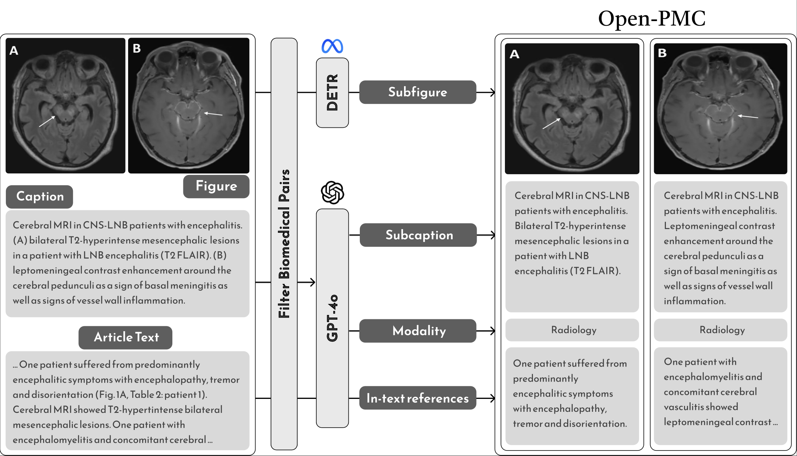
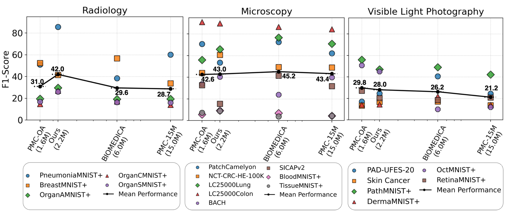

Advancing Medical Representation Learning Through High-Quality Data
Introducing Open-PMC-2M: a curated medical image–text dataset of 2.2M pairs with subfigures, enriched in-text references, and modality labels.
York University • Vector Institute • University of Toronto • Queen’s University • University Health Network
Key Takeaways
- Open-PMC-2M dataset: 2.2 M image–text pairs extracted from PubMed Central; each image is a subfigure; text combines captions, subcaptions, and summarized in-text references.
- Broad modality coverage: all pairs labeled as Radiology, Microscopy, or Visible-Light Photography (VLP); non-medical content filtered out.
- Quality over quantity: despite being 3–7× smaller than PMC-15M and Biomedica, Open-PMC encoders achieve the highest Average Recall and MRR on retrieval and the best mean F1 in radiology zero-shot classification.
- Ablation insights: subfigure extraction and in-text reference summaries are major drivers of the gains.

Abstract
Despite the growing scale of medical vision-language datasets, the impact of dataset quality on model performance remains under-explored. We introduce Open-PMC-2M, a high-quality medical dataset from PubMed Central, containing 2.2 million image-text pairs, enriched with image modality annotations, subfigures, and summarized in-text references. The in-text references provide richer medical context than captions alone. We benchmark Open-PMC-2M against larger datasets across retrieval and zero-shot classification tasks, showing that data quality, not just size, drives strong gains. We include feature-space analysis and release data, trained models, and code.
Overview
We study how curation quality versus quantity affects learned representations in medical vision-language models. To test whether targeted curation improves representation learning, we decompose compound figures into subfigures, segment captions, and add summarized in-text references; our experiments show these steps yield stronger representations. We evaluate encoders across radiology, microscopy, and visible-light tasks.
Contributions
- Open-PMC-2M dataset: 2.2 M pairs with subfigures and enriched text (captions, subcaptions, in-text summaries); modality labels for radiology, microscopy, and VLP.
- Curation pipeline: subfigure splitting, subcaption alignment, in-text summarization, non-medical filtering, and modality assignment, with human checks.
- Quality vs. quantity: on retrieval and zero-shot benchmarks, Open-PMC encoders outperform models trained on much larger datasets like Biomedica and PMC-15M.
- Ablations: subfigures and in-text summaries each contribute meaningfully to gains.
- Representation analysis: MMD tests and t-SNE visualisations show a distinct latent space learned by Open-PMC encoders.
- Public release: dataset, trained encoders, and codebase are openly available.
Dataset
Composition
- 2.2 M image–text pairs after rigorous filtering.
- Images are subfigures from compound figures.
- Texts include captions, subcaptions, and summarized in-text references.
- Modalities: Radiology, Microscopy, Visible-Light Photography (VLP).
Curation Steps (brief)
- Data extraction & linking — Processed over four million open-access articles with the PMC-OA pipeline, parsing XML to extract figures, captions, and paragraphs that reference them, then linking each figure–caption pair with article metadata such as PMID and PMC-ID.
- Quality control — Removed articles with malformed XML or missing captions and filtered out figure–caption pairs lacking medical keywords to build an intermediate Open-PMC-17M dataset.
- Compound figure decomposition — Used a DETR-based detector trained on MedICaT to split compound figures into subfigures, then a ResNet-101 model trained on DocFigure to discard non-medical images, yielding 2.2 M high-quality medical subfigures.
- Caption segmentation & alignment — Employed GPT-4o to split full captions into subcaptions. Object-localisation and text-recognition models (YOLOv3 and ResNet-152) from Exsclaim matched panel labels to the correct subcaption; if labels were missing, the full caption was assigned.
- In-text reference summarisation — Extracted paragraphs mentioning each figure using XML cross-reference tags and regex, then used GPT-4o-mini to produce concise summaries.
- Modality assignment & validation — A GPT-4o-mini model classified each image modality from the caption. Three human reviewers checked a random sample of 1,000 images and agreed with the automated labels 87% of the time.
Results (at a glance)
- Retrieval (Recall@200): Open-PMC encoders achieve the best AR and MRR across Quilt, MIMIC-CXR, and DeepEyeNet.
- Zero-shot classification: Highest mean F1 in radiology; competitive across microscopy and VLP.
- Representation analysis: Distinct latent structure vs. PMC-15M and BIOMEDICA (MMD test; t-SNE visuals).

| Text-to-Image | Image-to-Text | Summary | ||||||
|---|---|---|---|---|---|---|---|---|
| Model | MIMIC-CXR | Quilt | DeepEyeNet | MIMIC-CXR | Quilt | DeepEyeNet | AR | MRR |
| ROCO | 0.080 | 0.024 | 0.079 | 0.084 | 0.023 | 0.108 | 0.066 | 0.208 |
| PMC-OA | 0.139 | 0.142 | 0.152 | 0.152 | 0.149 | 0.157 | 0.149 | 0.361 |
| BioMedCLIP | 0.162 | 0.186 | 0.147 | 0.185 | 0.166 | 0.162 | 0.168 | 0.556 |
| Biomedica | 0.094 | 0.195 | 0.145 | 0.076 | 0.169 | 0.155 | 0.139 | 0.506 |
| Open-PMC | 0.170 | 0.166 | 0.183 | 0.189 | 0.162 | 0.147 | 0.170 | 0.653 |
Why it matters
In medical AI, scale alone is not enough. Careful curation—subfigure extraction, richer text context, and modality labeling—produces stronger, more reliable representations that transfer better to real tasks.
Resources
Contact
For questions, please reach out to the corresponding authors listed in the paper.
Citation
@article{baghbanzadeh2025advancing,
title={Advancing Medical Representation Learning Through High-Quality Data},
author={Baghbanzadeh, Negin and Fallahpour, Adibvafa and Parhizkar, Yasaman and Ogidi, Franklin and Roy, Shuvendu and Ashkezari, Sajad and Khazaie, Vahid Reza and Colacci, Michael and Etemad, Ali and Afkanpour, Arash and Dolatabadi, Elham},
journal={arXiv preprint arXiv:2503.14377},
year={2025}
}